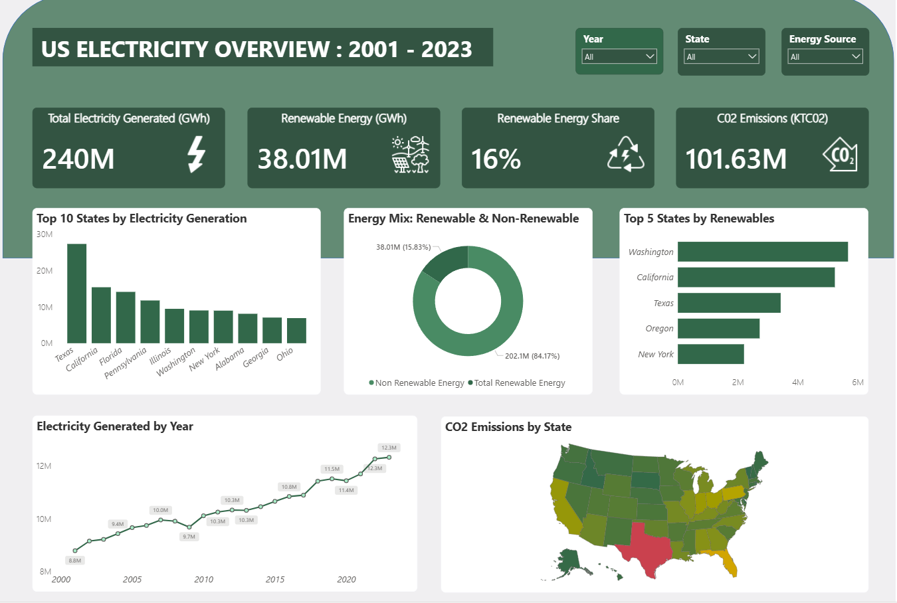
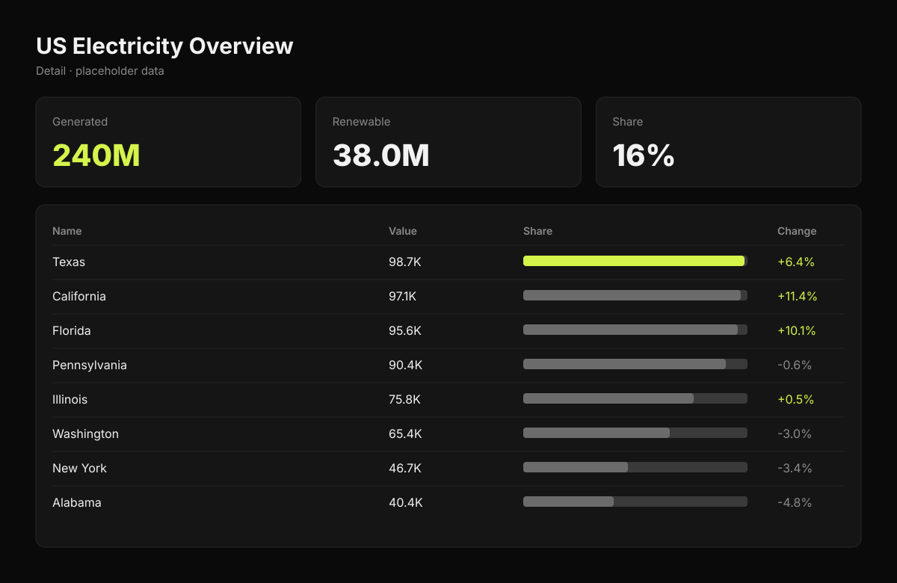
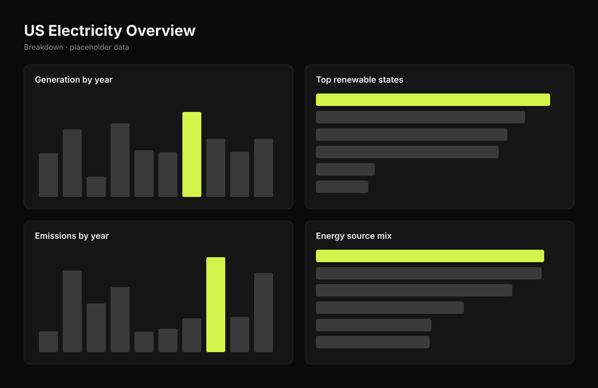

Energy analytics · Power BI · DAX
US Electricity Overview 2001–2023



Overview
An interactive Power BI report covering 23 years of US electricity generation by state and energy source. One page answers three questions leadership and policy readers actually ask: where the power comes from, how much of it is renewable, and where the emissions sit.
Key metrics
Methodology
Data Preparation
Combined yearly generation and emissions tables by state and source, standardised state names and energy-source categories, and removed duplicate and incomplete rows in Power Query.
Analytical Approach
Built a star schema with Date, State and Energy Source dimensions. DAX measures calculate renewable share, year-over-year change and state rankings that respond to every slicer.
Visual Design
KPI cards up top, ranked bars for state comparisons, a donut for the energy mix, a trend line for growth and a filled map for emissions — slicers for year, state and source.
Dashboard pages
Key findings
- 1
Texas generates the most electricity of any state by a wide margin — and carries the heaviest CO₂ footprint on the map.
- 2
Renewables make up about 16% of total generation (38.0M of 240M GWh); non-renewable sources still supply roughly 84%.
- 3
Washington leads renewable generation, ahead of California and Texas — largely on the back of hydropower.
- 4
Annual generation grew from about 8.8M to 12.3M GWh between 2001 and 2023, with a visible dip around 2009.
- 5
The top 10 states account for a large share of national output, so national trends are driven by a handful of grids.
Recommendations
Track renewable share by state, not just nationally — the national 16% hides very different state-level progress.
Pair generation with emissions intensity (CO₂ per GWh) to separate high-output states from high-polluting ones.
Use Washington and California as benchmarks when modelling renewable transition paths for high-output states like Texas.
Refresh the report annually so the 2001–2023 trend extends as new EIA data is published.
Live dashboard
Open in Power BI